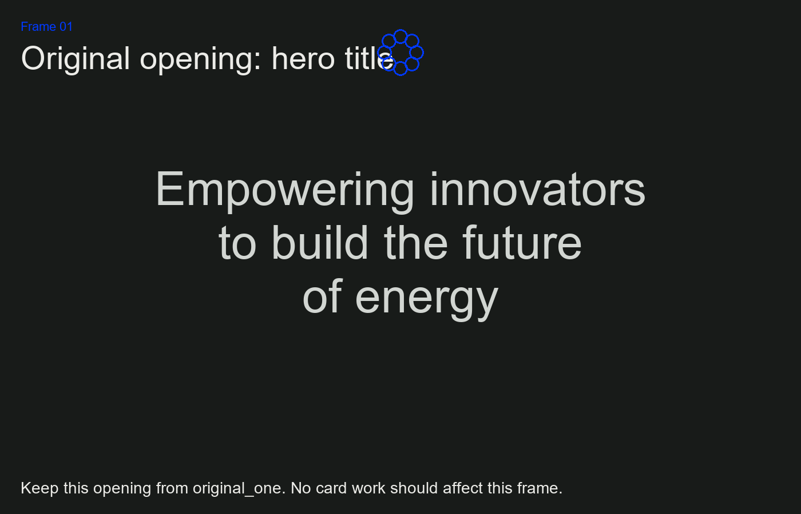
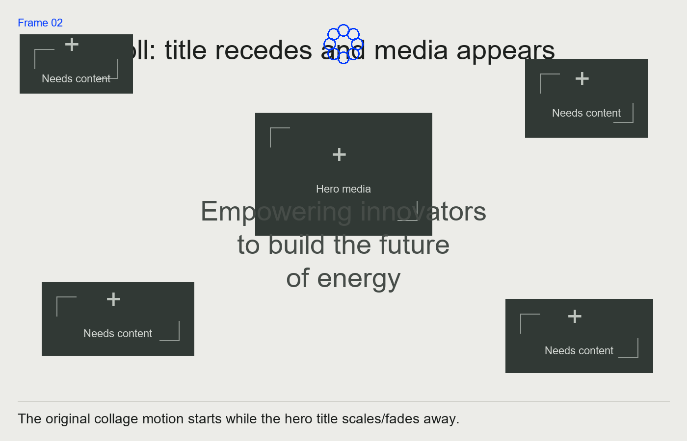
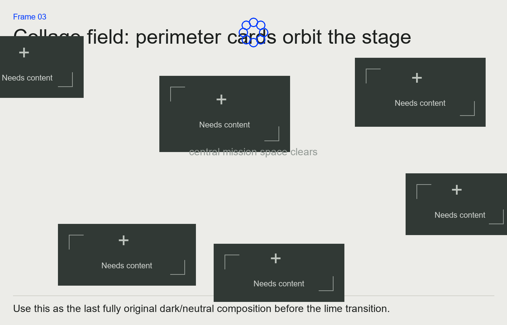
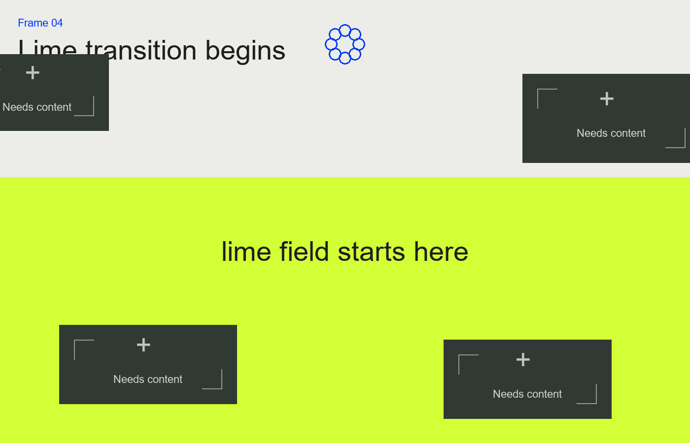
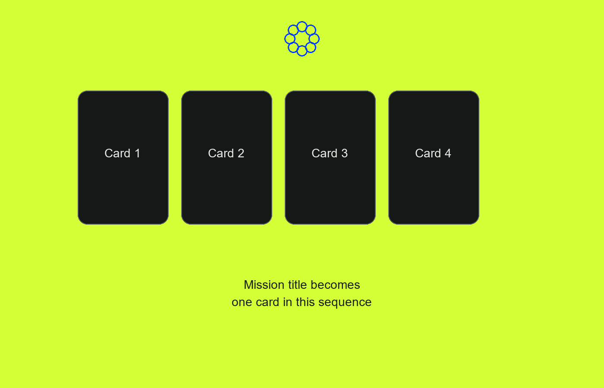

Homepage animation frame review
The homepage has been reverted to the saved original_one opening. These frames are a planning document for deciding where we start future changes. The recommended edit point is Frame 07, after the lime mission section has held on screen.
Frame 01

Original dark hero opening with the main title.
Frame 02

The scroll begins and the hero title recedes.
Frame 03

The media collage occupies the perimeter.
Frame 04

The lime background begins. Original card sizes should be preserved here.
Frame 05
Mission text reveals on lime.
Frame 06
Stable mission hold. This should remain original_one.
Frame 07

Recommended place to start the separate card animation later.